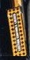

YF-23

katapulta/ tlen
Dźwignia bezpieczeństwa kontroli wyrzutu
Dźwignia bezpieczeństwa kontroli wyrzucania znajduje się po lewej stronie siedzenia wyrzucającego ACES-II. Służy do zabezpieczenia siedziska na podłodze przed przypadkowym uruchomieniem. W pozycji aktywnej dźwignia bezpieczeństwa kontroli wyrzutu znajduje się w pozycji poziomej, a napis „Uzbrojenie kontroli wyrzutu” jest czytelny. Jeśli siedzenie jest zabezpieczone, dźwignia bezpieczeństwa kontroli wyrzucania znajduje się w pozycji prawie pionowej i widoczny jest napis „Kontrola wyrzucania zablokowana”.